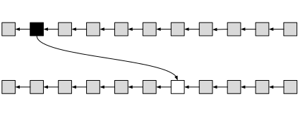

Non-Interactive Proofs of Proof-of-Work
What are NIPoPoWs?
Non-Interactive Proofs of Proof-of-Work (NIPoPoWs) are short stand-alone strings that a computer program can inspect to verify that an event happened on a proof-of-work-based blockchain without connecting to the blockchain network and without downloading all block headers. For example, these proofs can illustrate that a cryptocurrency payment was made.
What are NIPoPoWs useful for?
NIPoPoWs allow very efficient mobile wallets to be created. SPV wallets are already very lightweight compared to full nodes because they only require the download of block headers, not the whole blockchain. NIPoPoW wallets need to download only a small sample of block headers, around 250, when SPV clients need to download half a million block headers. The sample needed changes but doesn't grow much in size as the blockchain grows larger by the years, even after decades of data has been accumulated.
Sidechains
NIPoPoWs allow blockchains to communicate and interoperate, like APIs. Because the miners that run a blockchain do not monitor other blockchain networks, this is difficult to do without short proofs. If a blockchain supports smart contracts, like Ethereum, a contract can be written to validate a NIPoPoW to check that something happened on another blockchain and react to it. For instance, a payment made on Ethereum Classic could cause a payment to be released by an Ethereum smart contract.
NIPoPoW support
Proofs about a blockchain can be produced only if the blockchain supports NIPoPoWs in its blocks. This support can be added retroactively without the need for a soft or hard fork and without requiring miner approval through the use of velvet forks.
Some cryptocurrencies already include build-in NIPoPoWs support. ERGO, Nimiq, and WebDollar have added support since their genesis.
Media references
- "Sidechains: Why These Researchers Think They Solved a Key Piece of the Puzzle" at Bitcoin Magazine.
- "The Sidechains Breakthrough Almost Everyone in Bitcoin Missed" at coindesk.
- "Velvet Forks: Crypto Updates Without the Controversy?" at coindesk.
Technical Papers
We have published a series of academic papers on these concepts. If you're interested in understanding why NIPoPoWs are secure and how to use them in your blockchain system you can consult them.
"Non-Interactive Proofs of Proof-of-Work" by Aggelos Kiayias, Andrew Miller and Dionysis Zindros
This paper introduces NIPoPoWs, describes their construction in detail, formally proves that they are cryptographically secure by a computational reduction, and provides experimental results illustrating their security and short size.
"Proofs of Proof-of-Work with Sublinear Complexity" by Aggelos Kiayias, Nikolaos Lamprou and Aikaterini-Panagiota Stouka
This paper introduced the concept of PoPoWs, the first iteration on which the NIPoPoWs construction was based. It was published at the Bitcoin Workshop of Financial Crypto '16.
"(Short Paper) A Wild Velvet Fork Appears! Inclusive Blockchain Protocol Changes in Practice" by A. Zamyatin, N. Stifter, A. Judmayer, P. Schindler, E. Weippl and W. Knottenbelt
This paper further elaborates on velvet forks and practical deployment considerations.
We are actively working on more papers detailing how NIPoPoWs can be useful in practice.
How do they work?
Proofs of Proof-of-Work are based on the simple observation that some blocks achieve a better mining target than others. For example, the current difficulty may require that a block hash needs to start with 10 zeroes, but it so happens that some block hashes start with 15. These superblocks are rare and happen randomly. The idea with NIPoPoWs is that the whole list of block headers doesn't need to be presented to the network, as these blocks capture cumulative difficulty on average. If a blockchain portion has 128 blocks, then on average half of them (64) will have an extra zero in the binary representation of their hashes, a quarter (32) will have two zeroes, and so on. A blockchain can therefore be "compressed" by only sending these blocks on the network.
The average distribution of blocks is illustrated in the following figure. The bottom part shows the regular blockchain. Higher levels show blocks with 1, 2, or 3 extra zeroes in their hashes. Taking only these blocks, one can form a superchain.

If these superblocks are presented in the form of a proof, each needs to include a pointer to its previous block. This is similar to how regular blocks include a pointer to the previous block. This connectivity is called interlinking and is the reason why a velvet fork is required.
The full details of how to interlink the blockchain, as well as how to produce, verify, and compare proofs are given in our papers.